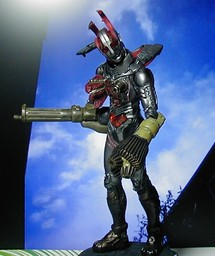
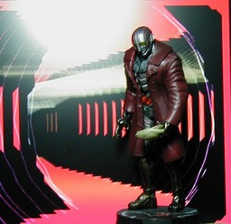
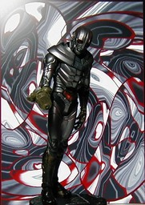
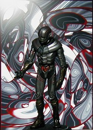
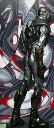

S.I.C.Vol. 10 ロボット刑事Ｋ

マルデコメディ。狂ったキカイには青い空がよく似あう。
必要のない着衣に理性を条件付けし、怒りを電子頭脳の Overclock に転化せんとするＫ。
追いつめたＫ。

自論を展開するＫとその背中。 S.I.C. Vol.10 のロボット刑事Ｋです。そこそこの値がするだけあって、さすがに匠魂とは違った味があります。関節の可動部は首と腕だけですが、写真の例のように小道具やギミックが豊富です。コートはラバーで、少なくとも片腕を外して袖を通して着せます。布ではないので、コートを着せると腕の動きはほとんど固定されてしまいます。写真にあるものの他には手錠、手袋をはめた手、「現場」の印などが付属します。高さは台ありで 20cm 弱、なしで 17cm ぐらいです。 定価は 3675 円ですが、プレミア付き中古送料入金手数料込で 5000 円弱しました。私はメーカーのミニフィギュア専門なので、これは私が持ってるフィギュアではかなり高い部類になるのですが、満足度も私の中で 1, 2 を争うほど高いです。 最初のものの背景は「青空」でググって見つけました。今は http://www.h6.dion.ne.jp/~cta/ からその画像へリンクをたどれないようです。日付けは撮ったあと GIMP で消しました。それ以外の背景の Winamp の MilkDrop プラグインを WinShot したものです。 更新：06/02/15 初公開：2006年02月18日 01:05:26 Links: S.I.C.: http://www.tamashii.jp/sic/ 背景: http://www.h6.dion.ne.jp/~cta/LOVELOG_IMG/20050615df8fd804.jpg GIMP: http://www.gimp.org/ MilkDrop: http://www.milkdrop.co.uk/ WinShot: http://www.woodybells.com/winshot.html